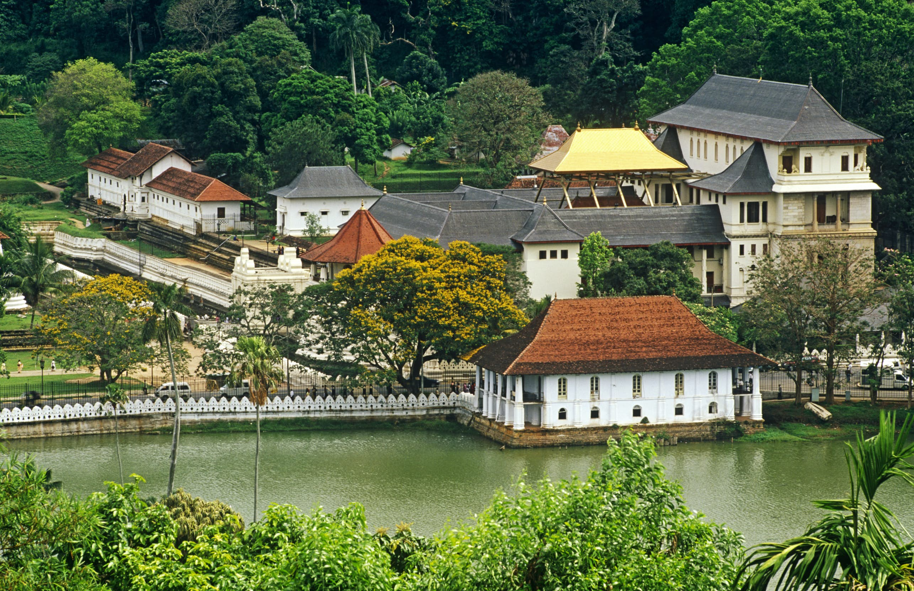
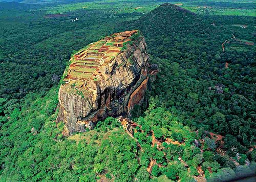
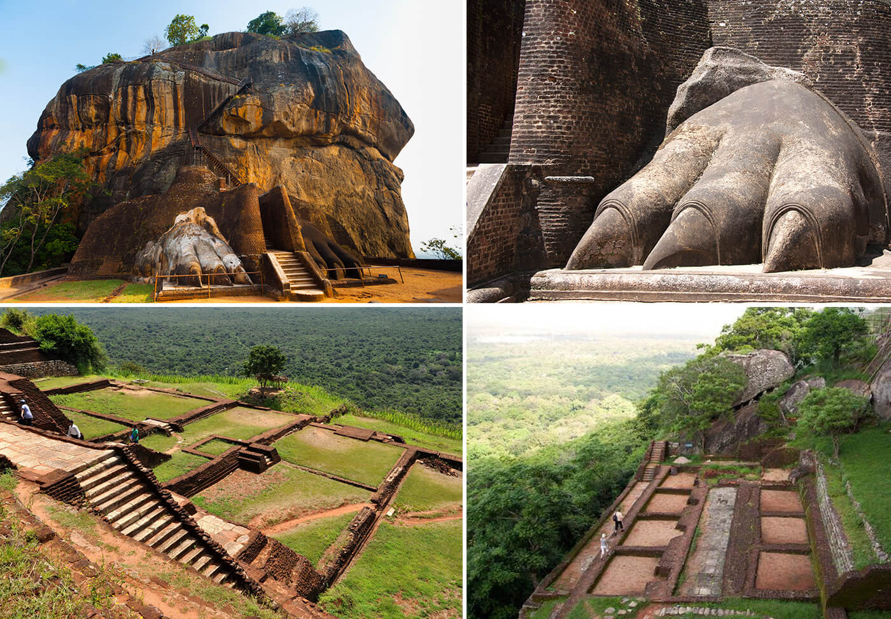
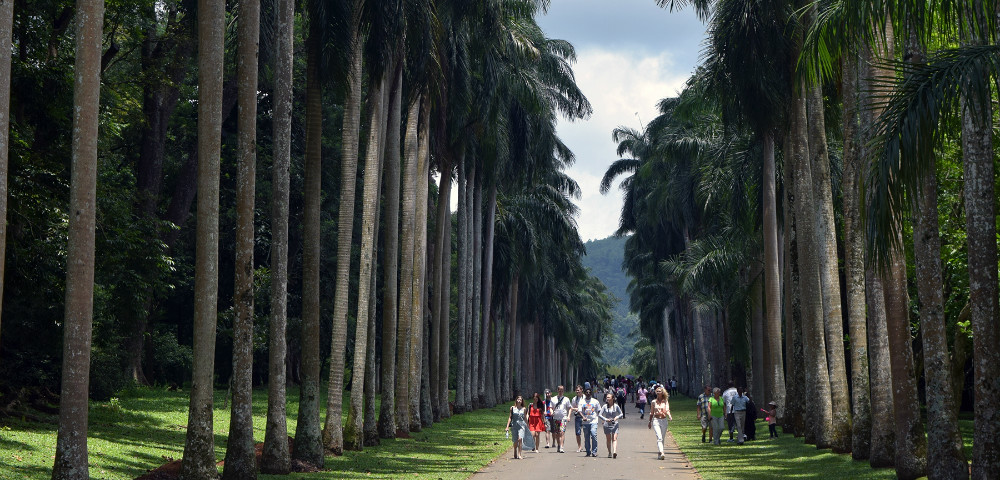
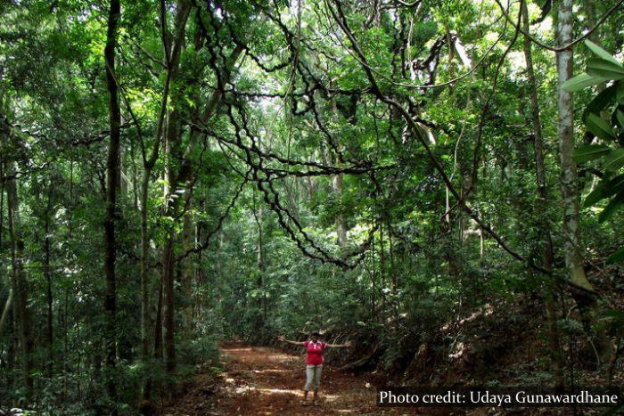
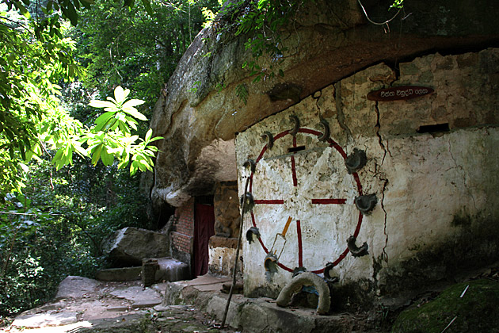

The Central Province is one of the nine provinces of Sri Lanka, the first level administrative division of the country.
It is the 6th largest province by area and is home to 2.5 million people. It is bordered by North Central Province to the north,
Uva Province to the east, North Western Province to the west and Sabaragamuwa Province to the south and west. The province's capital is Kandy.
The cities of Matale and Nuwara Eliya are in the Central Province. The province is famous for its production of Ceylon tea, planted by the British in the 1860s after a devastating disease killed all the coffee plantations in the province. The Central Province attracts many tourists, with hill station towns such as Gampola, Hatton and Nuwara Eliya.
1. Temple of the Tooth

Temple of the Sacred Tooth Relic or Sri Dalada Maligawa [a]; commonly known as the ශ්රී දළදා මාළිගාව (Glorious Tooth Temple) (Note - The word ‘Temple’ is an incorrect translation of the word Maligawa. The English word for ‘Maligawa’ is ‘Palace’.), is a Buddhist temple in Kandy, Sri Lanka. It is located in the royal palace complex of the former Kingdom of Kandy, which houses the relic of the tooth of the Buddha. Since ancient times, the relic has played an important role in local politics because it is believed that whoever holds the relic holds the governance of the country. The relic was
historically held by Sinhalese kings. The temple of the tooth is a World Heritage Site mainly due to the temple and the relic.
The brick wall which runs along the moat and the Bogambara, lake is known as water waves wall.[4] Holes in
this wall are built to light coconut oil lamps. The main entrance gate which lies over the moat is called Mahawahalkada. At the foot of Mahawahalkada steps, there is a Sandakada pahana (moonstone) which is carved in Kandyan architectural style.
Mahawahalkada was totally destroyed in a 1998 bomb blast and rebuilt afterward along with Sandakada pahana other stone carvings.[6] Elephants are depicted in stone on either side of the entrance. A Makara Torana and two guardian stones are placed on top of the staircase. TheHewisi drummers' chamber is situated in front of the main shrine. The two storeys of the main shrine are known as "Palle malaya" (lower floor) and "Udu malaya" (upper floor) or "Weda hitina maligawa".[7] The doors of the
Weda Hitana Maligawa are Ivory carvings. The actual chamber in which the tooth relic is kept is known as the "Handun kunama".
The golden canopy over the main shrine and the golden fence which encircles the temple complex, was built in 1987 by then Prime Minister, Ranasinghe Premadasa.[8] The tooth relic is encased in seven golden caskets which are engraved with precious gemstones.[9] The casket represent a stupa; the procession casket which is used during the Kandy Esala Perahera is also displayed in the same chamber.
2. Sigiriya World Heritage Site

Sigiriya or Sinhagiri is an ancient rock fortress located in the northern Matale District near t
he town of Dambulla in the Central Province, Sri Lanka. It is a site of historical and archaeological signific
ance that is dominated by a massive column of rock around 180 metres (590 ft) high.[2]
According to the ancient Sri Lankan chronicle the Culavamsa, this area was a large forest, then after storms and landslides it b
ecame a hill and was selected by King Kashyapa (477 – 495 AD) for his new capital. He built his palace on top of this rock and decorated its sides with colourful frescoes. On a small plateau about halfway up the side of this rock he built a gateway in the form of an enormous lion. The name of this place is derived from this structure — Sīnhāgiri, the Lion Rock.
The capital and the royal palace were abandoned after the king's death. It was used as a Buddhist monastery until the 14th century.[3] Sigiriya today is a UNESCO listed World Heritage Site. It is one of the best preserved examples of ancient urban planning.
Archaeological remains and features

In 1831 Major Jonathan Forbes of the 78th Highlanders of the British Army, while returning on horseback from a trip to Pollonnuruwa, encountered the "bush covered summit of Sigiriya".[9] Sigiriya came to the attention of antiquarians and, later, archaeologists. Archaeological work at Sigiriya began on a small scale in the 1890s. H.C.P. Bell was the first archaeologist to conduct extensive research on Sigiriya. The Cultural Triangle Project, launched by the Government of Sri Lanka, focused its attention on Sigiriya in 1982. Archaeological work began on the entire city for the first time under this project.
There was a sculpted lion's head above the legs and paws flanking the entrance, but the head collapsed years ago.
3. Royal Botanical Gardens
Royal Botanic Gardens, Peradeniya are about 5.5 km to the west of the city of Kandy in the Central Province of Sri Lanka. In 2016, the garden was visited by 1.2 million locals and 400,000 foreign visitors.[1] It is near the Mahaweli River (The longest river in Sri Lanka).[2] It is renowned for its collection of orchids. The garden includes more than 4000 species of plants, including orchids, spices, medicinal plants and palm trees.[3] Attached to it is the "National Herbarium of Sri Lanka". The total area of the botanical garden is 147 acres (0.59 km2), at 460 meters above sea level, and with a 200-day annual rainfall.
It is managed by the Division of National Botanic Gardens of the Department of Agriculture.
The origins of the Botanic Gardens date as far back as 1371 when King Wickramabahu III ascended the throne and kept court at Peradeniya near the Mahaweli river. This was followed by King Kirti Sri and King Rajadhi Rajasinghe. A temple was built on this location by King Wimala Dharma,
but it was destroyed by the British when they were given control over the Kingdom of Kandy

Thereafter, the groundwork for a botanical garden was formed by Alexandar Moon in 1821. He used the garden for coffee and cinnamon plants.The Botanical Garden at Peradeniya was formally established in 1843 with plants brought from Kew Garden, Slave Island, Colombo, and the Kalutara Garden in Kalutara. The Royal Botanic Garden, Peradeniya was made more independent and expanded under George Gardner as superintendent in 1844.
On Gardner's death in 1849 George Henry Kendrick Thwaites became superintendent. He served until he resigned in 1879, when he was succeeded by Henry Trimen, who served until 1895.[5][6]
The garden came under the administration of the Department of Agriculture when it was established in 1912.
4. Udawattekele Sanctuary

Udawattakele Forest Reserve often spelled as Udawatta Kele, is a historic forest reserve on a hill-ridge in the city of Kandy.
It is 104 hectares (257 acres) large. During the days of the Kandyan kingdom, Udawattakele was known as "Uda Wasala Watta" in Sinhalese
meaning "the garden above the royal palace". The sanctuary is famous for its extensive avifauna. The reserve also contains a great
variety of plant species, especially lianas, shrubs and small trees. There are several giant lianas. Many of small and medium
size mammals that inhabit Sri Lanka can be seen here. Several kinds of snakes and other reptiles might be seen. Udawattakele was designated as a forest reserve in 1856, and it became a sanctuary in 1938.
The Sri Lanka Forest Department has two offices in the reserve, one of which (at the southeastern entrance) has a nature education centre with a display of pictures, posters, stuffed animals, etc.

Being easily accessible and containing a variety of flora and fauna the forest has a great educational and recreational value.
Groups of school children and students regularly visit the forest and the education centre. The forest is also popular with foreign
tourists, especially bird watchers. Scientific nature research has been carried out in the forest by researchers. The forest is of
religious importance as there are three Bud
dhist meditation hermitages and three rock shelter dwellings for Buddhist monk hermits.
It has been recorded that the brahmin called Senkanda, from whose name the city's original name Senkandagalapura derives,
lived in a cave in this forest. The rock-shelter or cave now known as the Senkandagala-lena is on the slope above the temple of
the tooth and can be visited. The Senkandagala-lena collapsed in a landslide in 2012. The legend says the brahmin brought a sapling of
Jaya Sri Maha Bodhi here and planted it in the present site of Natha Devala.It was used as a pleasure garden by the Kandyan kings.
 Mahawahalkada was totally destroyed in a 1998 bomb blast and rebuilt afterward along with Sandakada pahana other stone carvings.[6] Elephants are depicted in stone on either side of the entrance. A Makara Torana and two guardian stones are placed on top of the staircase. TheHewisi drummers' chamber is situated in front of the main shrine. The two storeys of the main shrine are known as "Palle malaya" (lower floor) and "Udu malaya" (upper floor) or "Weda hitina maligawa".[7] The doors of the
Weda Hitana Maligawa are Ivory carvings. The actual chamber in which the tooth relic is kept is known as the "Handun kunama".
Mahawahalkada was totally destroyed in a 1998 bomb blast and rebuilt afterward along with Sandakada pahana other stone carvings.[6] Elephants are depicted in stone on either side of the entrance. A Makara Torana and two guardian stones are placed on top of the staircase. TheHewisi drummers' chamber is situated in front of the main shrine. The two storeys of the main shrine are known as "Palle malaya" (lower floor) and "Udu malaya" (upper floor) or "Weda hitina maligawa".[7] The doors of the
Weda Hitana Maligawa are Ivory carvings. The actual chamber in which the tooth relic is kept is known as the "Handun kunama".
 Royal Botanic Gardens, Peradeniya are about 5.5 km to the west of the city of Kandy in the Central Province of Sri Lanka. In 2016, the garden was visited by 1.2 million locals and 400,000 foreign visitors.[1] It is near the Mahaweli River (The longest river in Sri Lanka).[2] It is renowned for its collection of orchids. The garden includes more than 4000 species of plants, including orchids, spices, medicinal plants and palm trees.[3] Attached to it is the "National Herbarium of Sri Lanka". The total area of the botanical garden is 147 acres (0.59 km2), at 460 meters above sea level, and with a 200-day annual rainfall.
It is managed by the Division of National Botanic Gardens of the Department of Agriculture.
Royal Botanic Gardens, Peradeniya are about 5.5 km to the west of the city of Kandy in the Central Province of Sri Lanka. In 2016, the garden was visited by 1.2 million locals and 400,000 foreign visitors.[1] It is near the Mahaweli River (The longest river in Sri Lanka).[2] It is renowned for its collection of orchids. The garden includes more than 4000 species of plants, including orchids, spices, medicinal plants and palm trees.[3] Attached to it is the "National Herbarium of Sri Lanka". The total area of the botanical garden is 147 acres (0.59 km2), at 460 meters above sea level, and with a 200-day annual rainfall.
It is managed by the Division of National Botanic Gardens of the Department of Agriculture.